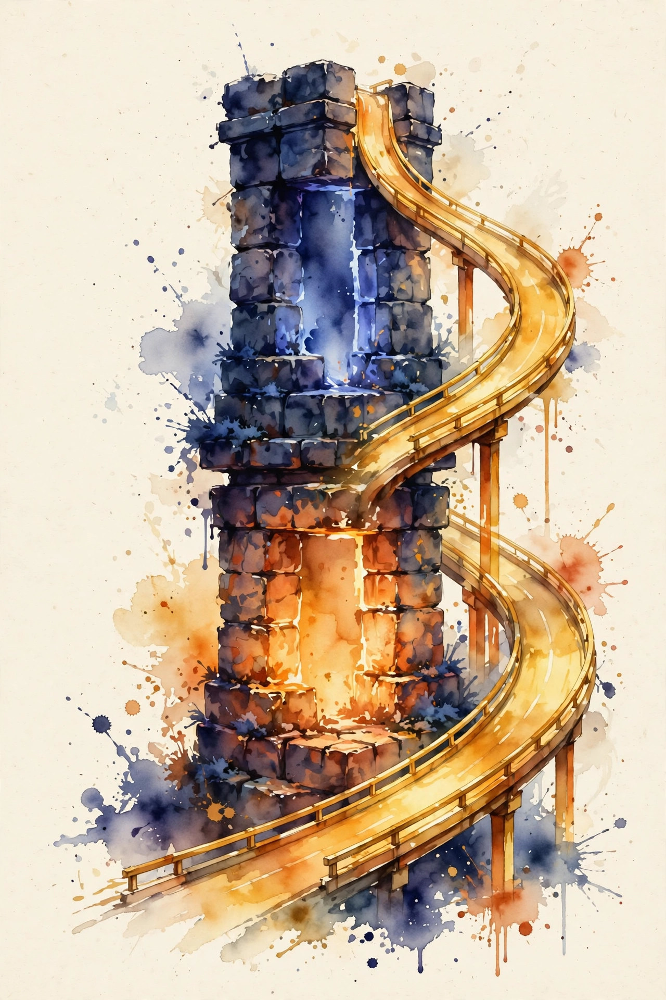
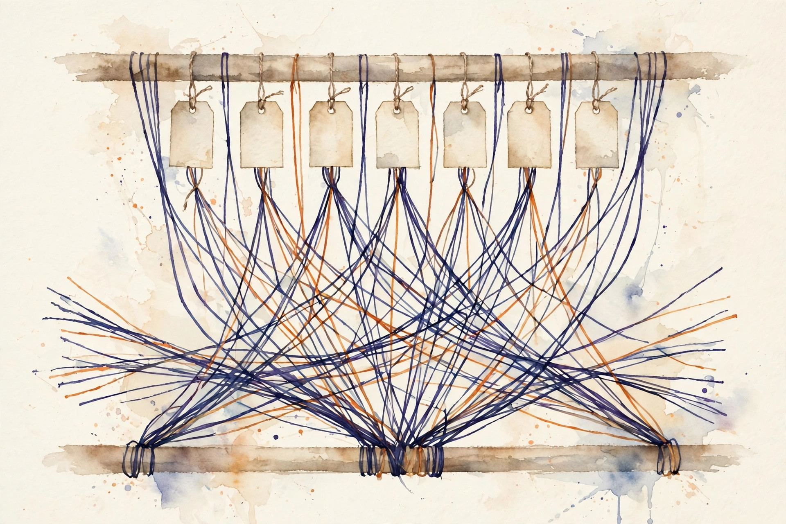
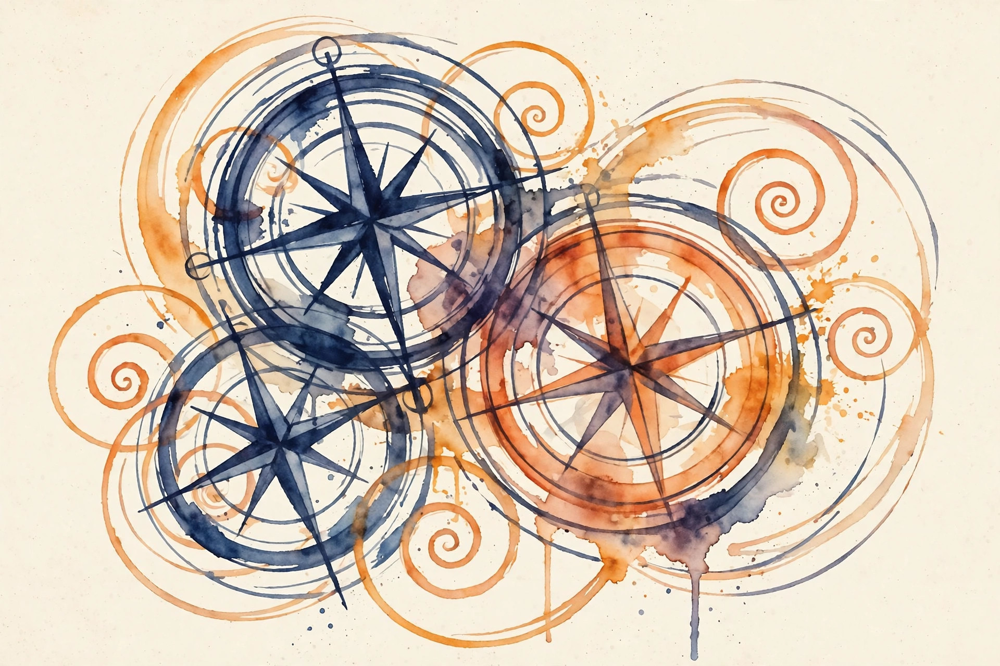

Companion · narrated from the lesson document
One block maps (B, T, d) to (B, T, d). Stack L of them and you have the model. This companion opens the block: embeddings, the three QKV lenses, scaled causal attention, heads, residuals, norms, the SwiGLU feedforward, RoPE positions, the output head, and the init that lets it all train.
From the lesson The idea, and every number beside it, comes from the cited section of u03_transformer_block.md. The phrasing is the companion's.
Illustration Invented by the companion: an analogy, a toy with made-up values, or a what-if. Never lecture content.
companion Companion voice: the idea above the tag is from the lesson. The generalization below it is the companion's.
Provenance: no full lecture transcript exists for this session. The page narrates the lesson document content/v2/cs336/lessons/u03_transformer_block.md, not a video. Claim class: REQUESTED-BRANCH. Every number carries the lesson section that reports it. The reference implementation is visuals/compute_u03.py, executed 2026-10-06.

Section 1 · Remediation
From the lessonRemediation
A transformer block maps (B, T, d) to (B, T, d). It has two sub-blocks, each wrapped as x + subblock(norm(x)). First multi-head causal self-attention, then a position-wise feedforward network. Attention lets each position mix information from earlier positions. The FFN transforms each position independently. Residuals and norms keep gradients flowing through L stacked blocks.
The lesson's worked check fixes the scale for everything below: B=2, T=8, d=16, h=4, dff=32, V=64. On that toy the block maps (2, 8, 16) to (2, 8, 16). Attention weights sum to 1 per row with max deviation 2.22e-16. Future weights are exactly 0. RMSNorm outputs have row rms between 0.9999 and 1.0000. Every number on this page comes from the lesson's reference run unless it is tagged as a toy.
The block preserves shape. (B, T, d) in, (B, T, d) out. That single contract is what makes stacking trivial.
Section 2 · C01
From the lessonC01 §2, §3, §5
Where do token meanings come from? A table E of shape (V, d). Each row is a learned vector. Lookup is an index operation, not computation: y[b, t, :] = E[ids[b, t], :]. The toy: E has shape (64, 16), ids [[3, 17]] give E[[3, 17]] with shape (1, 2, 16). The model learns the vectors by gradient descent.
From the lessonC01 §5, §6, §9
Parameter count is V*d, here 64*16 = 1024. Lookup costs no FLOPs. It costs memory traffic: one row per token, B*T*d*bytes per forward. The gradient wrt E is sparse: only rows that appeared in the batch get updates. The table is often the largest single matrix for large V. The lesson computed in visuals/compute_u03.py (executed 2026-10-06) that lookup on (2, 8) ids gives (2, 8, 16), and the full block output keeps that shape through to logits (2, 8, 64).
An id of V, off by one from a bad shift, indexes out of bounds or wraps silently depending on the framework.
From the lessonC01 §10
The alternative for huge V: hashed or factorized embeddings. One-hot times E is the same math, never the implementation. Keep the table for standard models.
Section 3 · C02
From the lessonC02 §2, §3, §5
Why three matrices for one input? The toy: x (2, 8, 16) times Wq, Wk, Wv (each 16x16) gives q, k, v each (2, 8, 16). Queries ask, keys advertise, values carry content. One shared map could not learn the three roles. The mental model: three learned lenses on the same input. The attention score compares a query lens against key lenses. The values are what actually get mixed. The maps are linear, no nonlinearity. Gradients flow to each W independently.
From the lessonC02 §6, §9
The lesson's numbers, executed 2026-10-06: the toy block's QKV cost is 3*2*2*8*16*16 = 24576 FLOP, matching the U02 formula. Wq sampled std 0.2549 against the Xavier target 0.2500. The QKV maps hold 3 of the 4 attention matmuls' FLOPs and 3d^2 parameters. Fusing the three into one (d, 3d) matmul saves launch overhead (U07).
Tie Wq = Wk and the scores become symmetric similarities. The model loses the ask/advertise asymmetry, and some heads need it.
Section 4 · C03, C04
From the lessonC03 §2, §3, §5
How does a position choose what to read? Scores S = QK-transpose / sqrt(dh). Weights P = softmax(S). Output = P times V. The mental model: each query scores every key by dot product, softmax turns scores into a probability distribution, and the output is the expected value under that distribution. Attention is differentiable dictionary lookup with learned keys. The lesson's run: weights form a (2, 4, 8, 8) tensor, rows sum to 1 with max deviation 2.22e-16, all entries nonnegative.
Why the scale? Without it, QK-transpose has variance dh, so softmax saturates and gradients vanish. Dividing by sqrt(dh) keeps the input variance near 1. Softmax: P[i, j] = exp(S[i, j]) / sum over k of exp(S[i, k]). Rows sum to 1 by construction.
From the lessonC03 §11 The scale toy. Score std without the scale grows as sqrt(dh). At dh = 128 the std is about 11, softmax collapses to one-hot, and the model trains as a hard retrieval system. Move the slider.
Head dim dh = 128 · unscaled score std ≈ 11.3 · scaled score std ≈ 1.0
Unscaled std = sqrt(dh), from C03 §5. Scaled std ≈ 1 by construction of the 1/sqrt(dh) rule.
The scale is not optional. At dh = 128 the unscaled scores have std about 11, softmax collapses to one-hot, and gradients die.
From the lessonC04 §2, §5, §6
What stops position 3 from reading position 5 during training? The causal mask: add -inf (the lesson uses -1e9) to scores where j > i, before softmax. softmax(S + M): entries with -inf become exp(-inf) = 0 after normalization. The gradient through them is also zero, so no learning signal crosses the boundary. The lesson's run on T = 8: the upper triangle of P is exactly 0 (max 0.00e+00), the lower triangle holds the full distribution. The mask is a one-way mirror: each position sees itself and the past, never the future. Training then matches inference, where the future does not exist yet.
visuals/compute_u03.py (executed 2026-10-06). Upper triangle exactly 0 (lesson fact). Lower-triangle shading is illustrative: it marks where the distribution lives, not its values.Apply the mask after softmax and the future weights zero out, but the row no longer sums to 1. Every output gets silently rescaled.
From the lessonC03 §9, C04 §9, §10
Costs: scores and mix each cost 2*B*h*T*T*dh, the T-squared terms. The naive form materializes (B, h, T, T) in memory. U07 removes it. The T-squared-over-2 masked entries still cost FLOPs in the naive form, and kernels skip them. Alternatives: prefix masks let some positions see the future (bidirectional encoders), sliding window masks bound the past (U04). Causal is mandatory for autoregressive LMs.
Section 5 · C05
From the lessonC05 §2, §3, §5
Why not one big attention head? The toy: (2, 8, 16) reshapes to (2, 4, 8, 4), four heads of dim 4. Each head learns its own score pattern, then the outputs concatenate back to 16. Heads are parallel attention units sharing the input. Splitting lets each head specialize (one tracks syntax, one tracks position) while total width stays fixed. The reshape only renames axes. The learning sits in the per-head scores.
From the lessonC05 §5, §6, §9
The mechanism: reshape (B, T, h, dh), transpose to (B, h, T, dh) for the batched score computation, then after mixing transpose back and reshape to (B, T, d). The output projection Wo mixes heads. The lesson's run: the attention tensor is (2, 4, 8, 8) and the output reshapes back to (2, 8, 16) exactly. The reshapes are free metadata ops (views). Heads do not change total FLOPs at fixed d. They change the score pattern capacity. Keep h dividing d. Typical dh sits in {64, 128}.

If d is not divisible by h, the reshape fails loudly, which is good. A manual split with wrong arithmetic silently scrambles head boundaries, which is bad.
From the lessonC05 §10
Alternatives: one head with dh = d (less pattern diversity), MQA and GQA share KV heads (U04).
Section 6 · C06, C07
From the lessonC06 §2, §3, §5
How do gradients survive 100 layers? y = x + f(x) gives dy/dx = I + J_f. The identity term carries gradient even when J_f vanishes. The block applies this twice per layer. The mental model: the residual is a highway. The input always reaches the output, and the sub-block only proposes a correction. Deep stacks learn corrections, not full transformations. Without residuals, L layers multiply L Jacobians and gradients vanish or explode exponentially.
From the lessonC06 §6, §9
The lesson's run: y - x has shape (2, 8, 16), the correction tensor. At init its norm is small relative to x (verifiable in the lab by comparing norms). Costs: one addition per sub-block, negligible FLOPs, one extra read of x. The cheapest important operation in the network.
From the lessonC07 §2, §3, §5
Then the placement question: norm inside or outside the residual? Pre-norm: x + subblock(norm(x)). Post-norm: norm(x + subblock(x)). Pre-norm keeps the highway clean: the residual stream never passes through a norm, and dy/dx keeps the identity term exactly. Post-norm normalizes the sum, which stabilizes activations but puts the norm on the gradient highway: the gradient passes through the norm's Jacobian at every layer, which rescales it.
Post-norm at depth 48 without warmup pushes gradients through 48 norm Jacobians. They shrink or explode, and training diverges in the first steps.
From the lessonC07 §5, §9, §10
Same FLOPs either way. Pre-norm trains more easily but lets the residual stream magnitude grow with depth, so it may need a final norm before the output head. Post-norm needs careful init and warmup. Modern decoder LMs use pre-norm almost universally. Post-norm survives in some encoders. The lesson's toy block uses pre-norm, and the lab compares gradient norms through a 4-layer stack in both forms on fixed data.
Section 7 · C08
From the lessonC08 §2, §3, §5
What does "normalize" compute, exactly? LayerNorm: (x - mean)/std * g + b. RMSNorm: x / rms(x) * g, where rms = sqrt(mean(x^2) + eps). Normalization rescales each row to a standard magnitude so the next sub-block sees stable inputs. RMSNorm skips the mean subtraction of LayerNorm: cheaper, and the mean carries little signal in residual streams. It drops two reductions and the bias. The forward saves one pass over d, the backward is simpler.
From the lessonC08 §6, §9
The lesson's run, executed 2026-10-06: RMSNorm with unit gain gives row rms between 0.9999 and 1.0000 (eps accounts for the shortfall). Costs: O(B*T*d) FLOPs, memory-bound (few ops per element). Both norms are small next to attention. RMSNorm is the modern default for decoder LMs.
eps = 0 with a zero row, possible after masking, means division by zero. One NaN poisons the whole run.
Section 8 · C09
From the lessonC09 §2, §3, §5
What does the FFN add that attention lacks? Attention mixes across positions. The FFN transforms each position alone, adding depth-wise capacity and the nonlinearity the network needs. Standard FFN: relu(xW1)W2, two maps. SwiGLU: (swish(xWg) * xWu)Wd, three maps, with Swish(z) = z * sigmoid(z). The elementwise product is the gating: the Swish branch modulates the up-projected features multiplicatively.
From the lessonC09 §5, §6, §9
To hold parameters fixed, SwiGLU uses dff = (2/3) * 4d. The lesson's toy (d=16, dff=32): SwiGLU maps (2, 8, 16) to (2, 8, 32) and back to (2, 8, 16), and the block totals 2592 parameters = 10d^2 + 2d with dff = 2d. Costs: 3*2*B*T*d*dff FLOPs, the largest single term in the layer (72.7 percent in the U02 toy). Parameters 3*d*dff.
visuals/compute_u03.py (executed 2026-10-06). QKV 24576 and head 32768 are lesson-computed. Scores, mix, and FFN follow the lesson's stated formulas (C03 §9, C09 §9) on the toy config and are tagged Illustration: 16384, 16384, 49152.Copy dff from a ReLU config (4d) into SwiGLU and parameters jump 50 percent. The FLOP budget breaks.
From the lessonC09 §10
Selection boundary: ReLU/GELU FFN (two maps, dff = 4d), SwiGLU (three maps, dff ≈ 2.67d). SwiGLU is the modern default. Keep ReLU for the teaching baseline.
Section 9 · C10, C11
From the lessonC10 §2, §3, §5
Attention is permutation-invariant, so where does order come from? RoPE rotates each Q/K pair by an angle proportional to its position. For pair (x0, x1) at position t with frequency w: [x0 cos(tw) - x1 sin(tw), x0 sin(tw) + x1 cos(tw)]. The dot product of a rotated query and rotated key then depends on the angle difference, which is the relative distance. RoPE turns absolute positions into relative ones. No position vectors are added. The rotation carries the information.
From the lessonC10 §6, §9
The lesson's run, executed 2026-10-06: applying RoPE to random (2, 8, 4, 4) changes no vector norm (max deviation 4.44e-16), because rotation is orthogonal. The block's attention runs with RoPE on Q and K. Costs: O(B*T*d) FLOPs, tiny, no parameters, angles precomputable.

Apply RoPE to V as well as Q/K and the values get a position-dependent rotation the output projection never asked for. Content scrambles by position.
From the lessonC11 §2, §3, §5, §6
How do vectors become word probabilities? The head is a linear map to vocabulary size, usually tied to the embedding table: logits = y @ E-transpose. The toy: y (2, 8, 16) against E (64, 16) gives (2, 8, 64), cost 2*2*8*16*64 = 32768 FLOP, small at this V, dominant at large V. Softmax over the last axis gives next-token probabilities. Tying says the way in and the way out share geometry: similar words have similar rows. Untied, the head adds V*d parameters. Tied, it adds zero, and gradients from the loss flow into E from both ends. At V=32000, d=512, the head costs 2*B*T*d*V per step.
From the lessonC10 §10, C11 §10, §11
Alternatives: learned absolute embeddings (fail past training length), ALiBi (bias instead of rotation) for position. For the output, the untied head or sampled softmax at extreme V. Tie by default. Untie when the head needs different geometry, for example with frozen input embeddings: the shared matrix then serves two masters and both degrade.
Section 10 · C12, synthesis
From the lessonC12 §2, §3, §5
Why not init all weights to 1? Ones would amplify every signal 16x per layer. Initialization sets the signal scale at step zero. For y = Wx with W of shape (m, n): Var(y_i) = n * Var(W) * Var(x). Setting Var(W) = 2/(m+n), Xavier, balances forward and backward and keeps Var(out) = Var(in). The lesson's toy: Xavier target std 0.2500 at d=16, sampled Wq std 0.2549, within sampling noise. Output projections (Wo, Wd) often use a smaller gain scaled by 1/sqrt(2L), so L residuals do not inflate the stream. Residual branches start small so the network begins near the identity function.
visuals/compute_u03.py (executed 2026-10-06).Zero-init all weights and every head computes the same thing. Gradients are identical, and symmetry never breaks.
From the lessonC12 §9, §10
One-time cost, wrong init costs the whole run. Alternatives: Kaiming for ReLU (gain sqrt(2)), small fixed std like 0.02 (the GPT-2 recipe). Xavier or Kaiming for the analysis, 0.02-style for the recipe.
From the lesson The arc, end to end. Ids become vectors by lookup, with no FLOPs and sparse gradients (C01). Three linear lenses split the input into queries, keys, values (C02). Scaled dot products become a distribution, the causal mask deletes the future before normalization, and the mix is the expected value (C03, C04). Heads split d into parallel score patterns and Wo mixes them back (C05). Two residual highways per layer carry the gradient, and pre-norm keeps the highway clean (C06, C07). RMSNorm rescales rows at low cost (C08). SwiGLU gates up-projected features with three maps at dff ≈ 2.67d (C09). RoPE writes order into rotation on Q and K (C10). The tied head maps vectors back to vocabulary (C11). Xavier-scale init starts the network near the identity (C12).
From the lesson Where the unit points next, in the lesson's own forward links: U07 fuses the QKV maps and removes the (B, h, T, T) materialization, skipping the masked entries. U04 shrinks the KV heads (MQA, GQA), bounds the past (sliding window), and offers linear attention. U05 consumes the logits with the cross-entropy loss.
Wisdom index
Each nugget states the idea in plain words, why it matters, and the transferable principle. Every one is anchored to its lesson section.